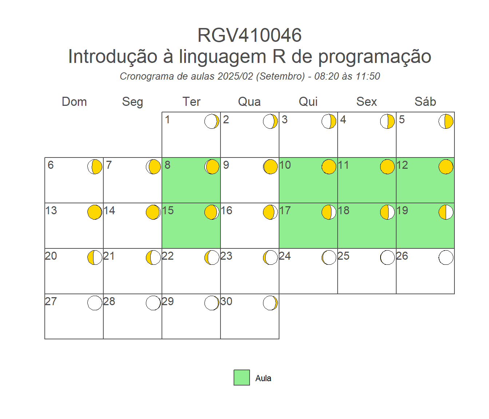

Bem-vindo ao material de apoio da disciplina RGV410046 (Introdução à linguagem R de programação)! Esta página contém os dados e scripts R necessários para aplicação prática dos conteúdos vistos na disciplina.
Docentes
Prof. Dr. Tiago Olivoto
Prof. Dra. Ana Catarina Conte Jakovac
Calendário de aulas
Clique aqui e veja como o calendário foi feito!
library(calendR)# tutorial calendR# https://r-coder.com/calendar-plot-r/events <-rep(NA, 61)events[c(21, 28)] <-"08:20 às 11:50"events[c(23:25, 29:32)] <-"13:30 às 16:00"img <-"figs/calendr.png"# Creating the calendarcalendR(year =2022,start_date ="2022-11-01",end_date ="2022-12-31",special.days = events,special.col =c("lightsalmon", "lightgreen"),title ="RGV410046 - Introdução à linguagem R de programação", subtitle ="Cronograma de aulas",mbg.col ="forestgreen", months.col ="white",bg.img = img,legend.pos ="bottom")

Conteúdo programático
21/11/2022
Introdução à disciplina
Instalação do R e Rstudio
Introdução ao R
Script
Pacotes
Fóruns e materiais de apoio
Exercício (encontrar pacotes)
23/11/2022
Dinâmica aula anterior
Tipos de dados
Numérico
Lógico
Caractere
Estrutura de dados;
Vetor
Matriz
Data frame
Tibbles
Array
Lógica de programação
Base
Tidyverse
Exercício (lógica de programação)
24/11/2022
Importação de dados (pc, repositório)
dados tidy
Conversão de dados
Exercício descrição dos dados, arrumar tipo de dados
Exportação de dados
25/11/2022
Manipulação de dados
Longer (dados errados, para arrumar)
Wider
Separate
Unite
rename
28/11/2022
Mutação de dados
select
filter
slice
arrange
(dados próprios para o dia 1)
30/11/2022
Sintetização de dados
mutate
group_by
summarise
across
01/12/2022
Seus dados, suas análises
02/12/2022
o básico do ggplot2
Fechamento da disciplina
Instalação do R e Rstudio
Para reprodução dos exemplos deste material, os softwares R e RStudio são necessários
O código fonte deste material pode ser encontrado neste repositório GitHub. Para informar qualquer problema, por favor, crie um pull request.
Licença
<a rel=“license” href=“http://creativecommons.org/licenses/by-nc-sa/4.0/” target=“_blank” rel=“noopener”><img src=“https://raw.githubusercontent.com/TiagoOlivoto/tiagoolivoto/master/static/img/gemsr/license.jpg” alt=“Licença Creative Commons” style=“border-width:0” width=“200” height=“40”/></a><br />Este material é distribuído nos termos da licença <a rel=“license” href=“http://creativecommons.org/licenses/by-nc-sa/4.0/”>CC BY-NC-SA 4.0</a>. resumo legível da licença afirma que você tem o direito de:
Compartilhar — copiar e redistribuir o material em qualquer suporte ou formato
Adaptar — remixar, transformar, e criar a partir do material
Atribuição — Você deve dar o crédito apropriado, prover um link para a licença e indicar se mudanças foram feitas. Você deve fazê-lo em qualquer circunstância razoável, mas de nenhuma maneira que sugira que o licenciante apoia você ou o seu uso.
De acordo com os termos seguintes
Não Comercial — Você não pode usar o material para fins comerciais.
CompartilhaIgual — Se você remixar, transformar, ou criar a partir do material, tem de distribuir as suas contribuições sob a mesma licença que o original.
Sem restrições adicionais — Você não pode aplicar termos jurídicos ou medidas de caráter tecnológico que restrinjam legalmente outros de fazerem algo que a licença permita.
---title: "RGV410046 - Introdução à linguagem R de programação"---Bem-vindo ao material de apoio da disciplina RGV410046 (Introdução à linguagem R de programação)! Esta página contém os dados e scripts R necessários para aplicação prática dos conteúdos vistos na disciplina.# Docentes::: {layout-ncol="2"}[](https://olivoto.netlify.app/)[](http://lattes.cnpq.br/6851033339458776):::# Calendário de aulas```{r }#| code-fold: true#| code-summary: "Clique aqui e veja como o calendário foi feito!"#| out-width: "100%"#| warning: false#| message: falselibrary(calendR)# tutorial calendR# https://r-coder.com/calendar-plot-r/events <-rep(NA, 61)events[c(21, 28)] <-"08:20 às 11:50"events[c(23:25, 29:32)] <-"13:30 às 16:00"img <-"figs/calendr.png"# Creating the calendarcalendR(year =2022,start_date ="2022-11-01",end_date ="2022-12-31",special.days = events,special.col =c("lightsalmon", "lightgreen"),title ="RGV410046 - Introdução à linguagem R de programação", subtitle ="Cronograma de aulas",mbg.col ="forestgreen", months.col ="white",bg.img = img,legend.pos ="bottom")```# Conteúdo programático## 21/11/2022- Introdução à disciplina- Instalação do R e Rstudio- Introdução ao R - Script - Pacotes - Fóruns e materiais de apoio- Exercício (encontrar pacotes)## 23/11/2022- Dinâmica aula anterior- Tipos de dados- Numérico- Lógico- Caractere- Estrutura de dados; - Vetor - Matriz - Data frame - Tibbles - Array- Lógica de programação - Base - Tidyverse- Exercício (lógica de programação)## 24/11/2022- Importação de dados (pc, repositório)- dados tidy- Conversão de dados- Exercício descrição dos dados, arrumar tipo de dados- Exportação de dados## 25/11/2022- Manipulação de dados- Longer (dados errados, para arrumar)- Wider- Separate- Unite- rename## 28/11/2022- Mutação de dados- select- filter- slice- arrange- (dados próprios para o dia 1)## 30/11/2022- Sintetização de dados- mutate- group_by- summarise- across## 01/12/2022- Seus dados, suas análises## 02/12/2022- o básico do ggplot2- Fechamento da disciplina# Instalação do R e RstudioPara reprodução dos exemplos deste material, os softwares R e RStudio são necessários{{< video https://www.youtube.com/embed/e89kyYJgWqc >}}<aclass="btn btn-success"href="https://cran.r-project.org/bin/windows/base/"target="_blank"><iclass="fa fa-save"></i> Download do R</a><aclass="btn btn-success"href="https://www.rstudio.com/products/rstudio/download/"target="_blank"><iclass="fa fa-save"></i> Download do RStudio</a># Pacotes necessáriosPara começar, é sugerido que os seguintes pacotes sejam instalados (confira como fazer isso no vídeo abaixo).```{r warning=FALSE, message = FALSE}library(tidyverse) # manipulação de dadoslibrary(metan) # estatísticas descritivaslibrary(rio) # importação/exportação de dados```{{< video https://www.youtube.com/embed/8B8QDZnDhtY >}}# Dados e scripts<ahref="https://downgit.github.io/#/home?url=https://github.com/TiagoOlivoto/classes/tree/master/RGV410046"target="_blank"rel="noopener"><buttonclass="btn btn-success"><iclass="fa fa-save"></i> Download dados e scripts</button></a>```{r echo=FALSE}fs::dir_tree("E:/Desktop/UFSC/aulas/classes/RGV410046/data", recurse =1)```{{< video https://www.youtube.com/embed/hnO-KMpIVcg >}}# Referências::: {layout-ncol="3"}[](https://bendeivide.github.io/book-eambr01/)[](https://tiagoolivoto.github.io/e-bookr/index.html)[](https://r4ds.had.co.nz/):::# Detalhes importantes## Código fonteO código fonte deste material pode ser encontrado neste [repositório](https://github.com/TiagoOlivoto/classes/tree/master/RGV410046) GitHub. Para informar qualquer problema, por favor, crie um [pull request](https://github.com/TiagoOlivoto/classes/pulls).## Licença\<a rel="license" href="http://creativecommons.org/licenses/by-nc-sa/4.0/" target="\_blank" rel="noopener"\>\<img src="https://raw.githubusercontent.com/TiagoOlivoto/tiagoolivoto/master/static/img/gemsr/license.jpg" alt="Licença Creative Commons" style="border-width:0" width="200" height="40"/\>\</a\>\<br /\>Este material é distribuído nos termos da licença \<a rel="license" href="http://creativecommons.org/licenses/by-nc-sa/4.0/"\>CC BY-NC-SA 4.0\</a\>. resumo legível da licença afirma que você tem o direito de:- **Compartilhar** --- copiar e redistribuir o material em qualquer suporte ou formato- **Adaptar** --- remixar, transformar, e criar a partir do material- **Atribuição** --- Você deve dar o crédito apropriado, prover um link para a licença e indicar se mudanças foram feitas. Você deve fazê-lo em qualquer circunstância razoável, mas de nenhuma maneira que sugira que o licenciante apoia você ou o seu uso.- **De acordo com os termos seguintes** - **Não Comercial** --- Você não pode usar o material para fins comerciais. - **CompartilhaIgual** --- Se você remixar, transformar, ou criar a partir do material, tem de distribuir as suas contribuições sob a mesma licença que o original. - **Sem restrições adicionais** --- Você não pode aplicar termos jurídicos ou medidas de caráter tecnológico que restrinjam legalmente outros de fazerem algo que a licença permita.```{=html}<div align='center'><a href='https://www.free-website-hit-counter.com'><img src='https://www.free-website-hit-counter.com/c.php?d=9&id=138603&s=2' border='0' alt='Free Website Hit Counter'></a><br / ><small><a href='https://www.free-website-hit-counter.com' title="Free Website Hit Counter">Free website hit counter</a></small></div>```